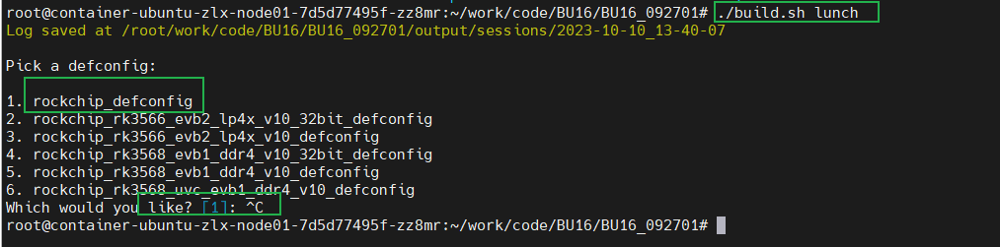
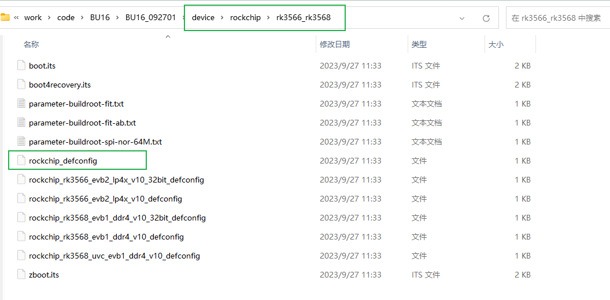
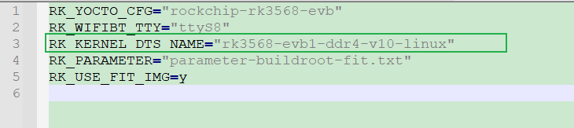
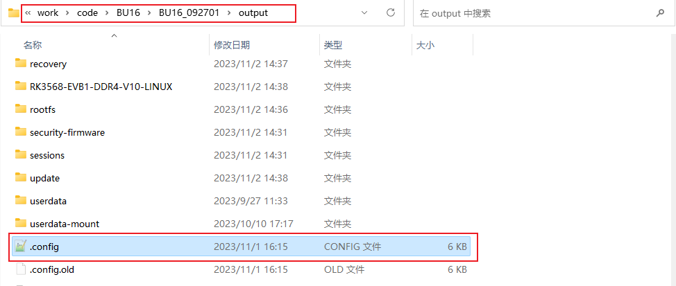
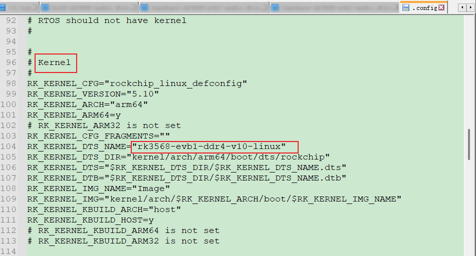

Linux
DTS - Device Tree Source
--- 纷繁芜杂，如星星点点；点清且明，如月映波光
概述
--- DTS是一种描述==硬件的数据结构==，起源于OF（OpenFirmware）；将驱动代码和设备硬件信息相互隔离；设备树对硬件信息进行抽象，驱动代码则负责逻辑处理 == 》 大量减少了内核当中的冗余代码；
- DTS：设备树的源文件，硬件的相应信息都在其中；
- 每一款硬件一般一个主控，==一个主控SOC对应一个DTS文件==
- DTSI：设备树头文件扩展名，相当于C语言的头文件；
- 一个SOC会对应多个设备，这些设备对于不同的SOC来说都是相同的，因此将这些==相同的DTS配置==抽象为一个.dtsi文件，SOC使用设备时，在DTS文件中包含该DTSI即可；
- DTSI一般用于描述SOC的内部外设信息，如CPU架构、主频、IIC、SPI、外设(Motor、Fan等)；
- ==相同节点的配置，dts中的配置会覆盖dtsi的配置，后编译的dtsi也会覆盖之前同节点的dtsi配置==，注意检查节点配置是否重复配置或默认配置先后顺序；
- DTC：DTS的编译工具，相当于众所周知的GCC；在内核源码scripts/dtc路径下已包含DTC相关工具
- DTB：DTS被DTC编译后的二进制格式设备树文件，才可被linux内核解析；
- DTB通过Bootloader引导加载到内核当中；
DTS框架
- Linux kernel设备树路径：
手动编译
./scripts/dtc/dtc -I dts -O dtb -o xxx.dtb arch/arm/boot/dts/xxx.dts // 编译 dts 为 dtb
./scripts/dtc/dtc -I dtb -O dts -o xxx.dts arch/arm/boot/dts/xxx.dtb // 反编译 dtb 为 dts
dts注意事项
1. 自行添加dts节点和代码的优势
--- 对于某些开发中常见的功能，可以改代码，使用dts的参数的方法；有利于后续调试仅修改dts参数，尽量解耦合；
2. 确定项目DTS所在的位置
--- 基于RK平台
方法一
- ./build.sh lunch 
- 查看对应的deconfig 
- 查看细节 
- 在对应的dts文件里面找包含的DTS和DTSI即可
法二
-
进入output路径，打开.config 
-
即可看到相应的dts

交叉编译
Android NDK交叉编译
--- 适用于Android平台，参考AS005文档
项目源码环境
--- 适用于Android平台，参考AS005文档
源码编译后的输出目录下进行环境编译
--- 适用于 Linux；应该也适用于android(未验证)
- Linux
一般会在buildroot/output/rockchip_rkxx/host下
- buildroot/output/rockchip_rkxx/host/bin 看编译版本
- 在buildroot/output/rockchip_rkxx/host/ 写源码 hello.c
- ./host/bin/arm-buildroot-linux-gnueabihf-gcc hello.c -o hello
- android 待后续验证补充